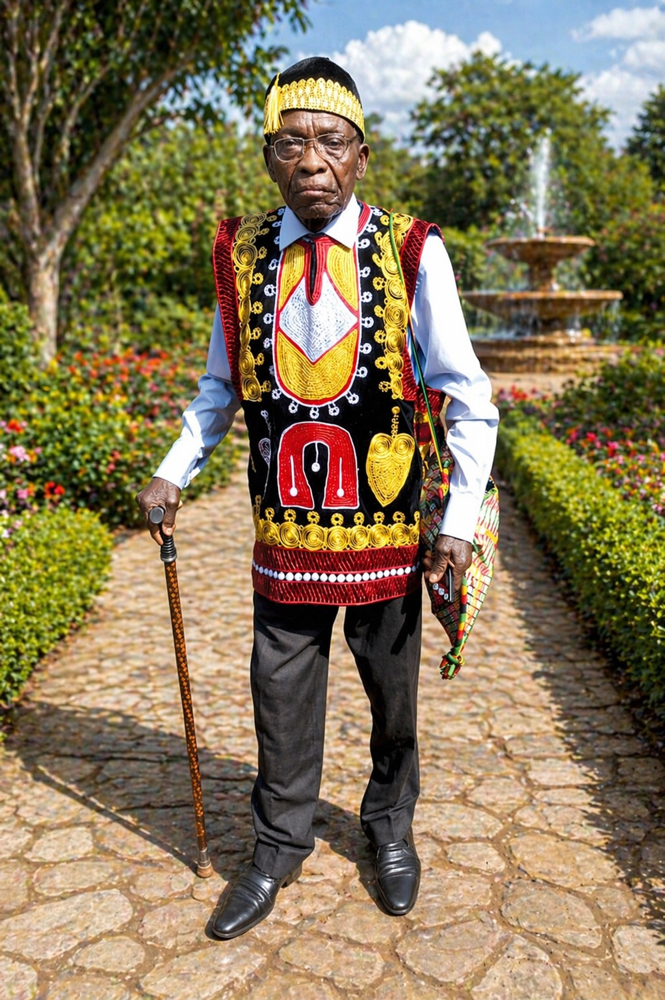
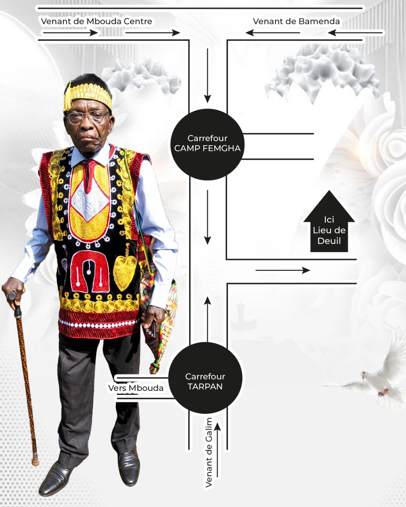
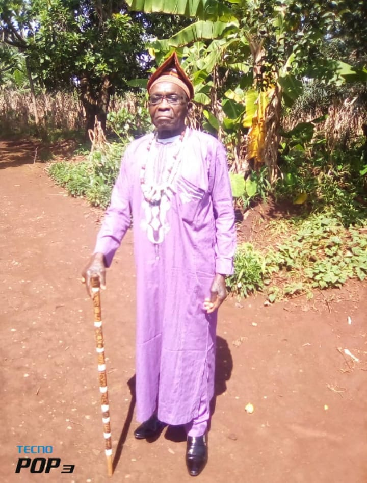
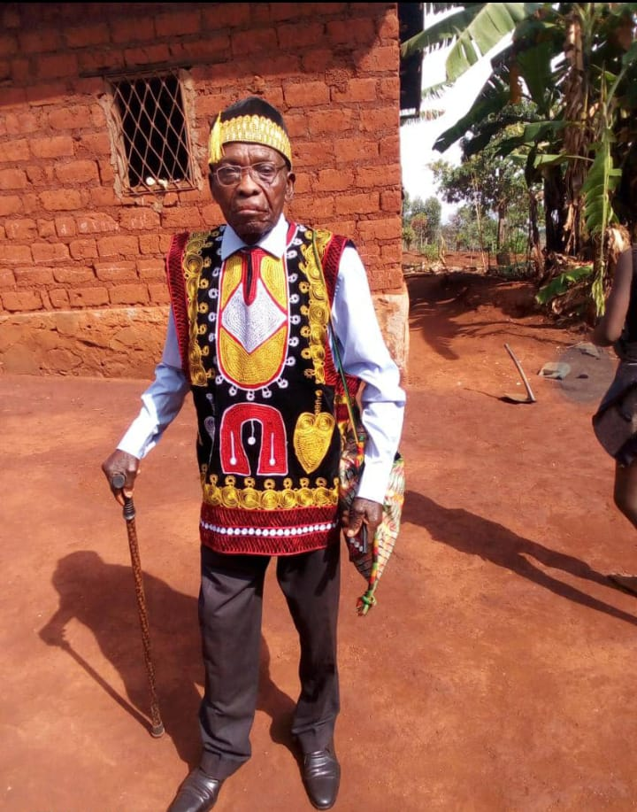
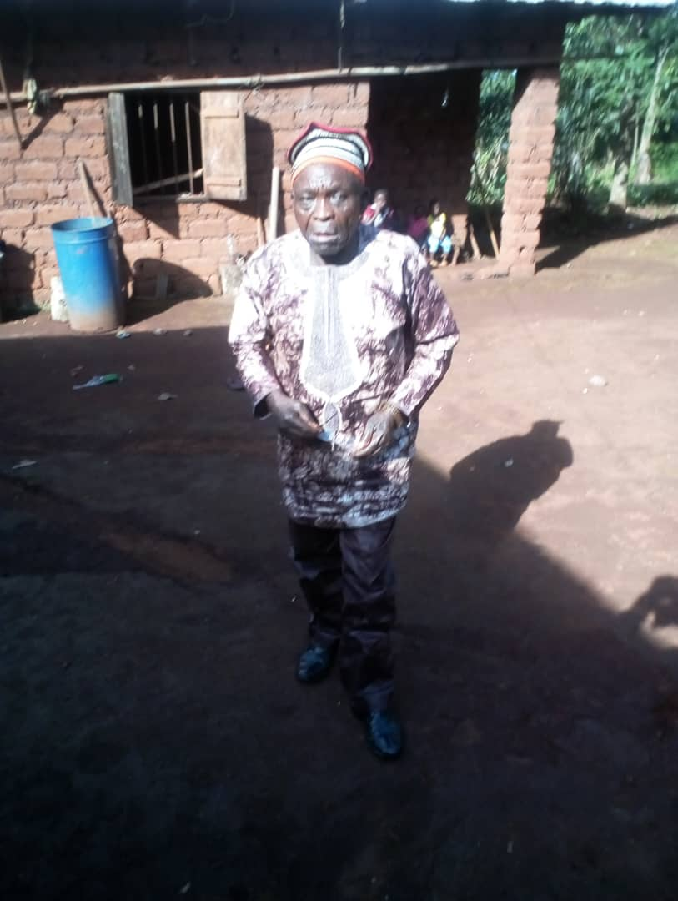

« Et j'entendis du ciel une voix qui disait : Écris : Heureux dès à présent les morts qui meurent
dans le Seigneur ! Oui, dit l'Esprit, afin qu'ils se reposent de leurs travaux, car leurs œuvres les
suivent... »
(Apocalypse 14:13)

Né vers 1947 à Mbouda
Niveau probatoire
Enseignant en médecine au collège ESAO.
Formateur en grutier au port autonome de Douala (Syndicat des Aconiers) jusqu'à la retraite
en obtenant 3 médailles.
Chrétien
Membre de plusieurs associations
Laisse les femmes, plusieurs enfants, petits-enfants et arrières-petits-enfants.




Un homme d'honneur, d'humilité et de transmission.
Avant de briller au port de Douala, il fut médecin diplômé d'État et a enseigné la médecine au collège ESAO, puis a servi à l'Hôpital de Mbouda. Transmettre son savoir et prendre soin des autres a toujours été au cœur de sa mission de vie.
Papa n'a pas commencé au sommet. Arrivé au Syndicat des Acconiers de Douala, il a d'abord travaillé comme simple manutentionnaire. À force de courage et de travail acharné, il est devenu chef d'équipe, puis grutier, pour finalement être élevé au rang de Formateur de Grutiers (SDV Saga). Une véritable leçon de résilience.
En reconnaissance de ses actes de bravoure et de ses loyaux services, il fut décoré de trois prestigieuses médailles (Argent, Vermeil et Or). Mais la plus belle de ses récompenses restera l'héritage d'amour qu'il nous laisse.
Laissez un témoignage ou un mot de réconfort à la famille.
Pour ceux qui souhaitent assister la famille ou apporter une contribution volontaire (Donation), veuillez contacter directement l'organisateur des obsèques via les numéros ci-dessous.
Votre message a été enregistré.